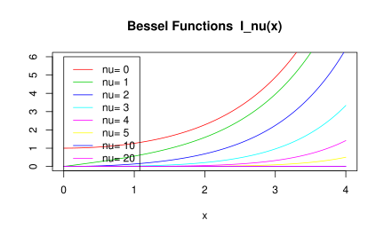

第 5 章 数学运算
统计计算之矩阵运算，自然离不开 Matrix 包 (Bates and Maechler 2017)
5.1 矩阵运算
5.1.1 乘法
5.1.3 交叉积
5.1.4 外积
A %o% A
#> , , 1, 1
#>
#> [,1] [,2]
#> [1,] 1 2
#> [2,] 2 3
#>
#> , , 2, 1
#>
#> [,1] [,2]
#> [1,] 2 4
#> [2,] 4 6
#>
#> , , 1, 2
#>
#> [,1] [,2]
#> [1,] 2 4
#> [2,] 4 6
#>
#> , , 2, 2
#>
#> [,1] [,2]
#> [1,] 3 6
#> [2,] 6 9
outer(A, A, FUN = "*")
#> , , 1, 1
#>
#> [,1] [,2]
#> [1,] 1 2
#> [2,] 2 3
#>
#> , , 2, 1
#>
#> [,1] [,2]
#> [1,] 2 4
#> [2,] 4 6
#>
#> , , 1, 2
#>
#> [,1] [,2]
#> [1,] 2 4
#> [2,] 4 6
#>
#> , , 2, 2
#>
#> [,1] [,2]
#> [1,] 3 6
#> [2,] 6 95.1.5 直积
直积/克罗内克积
5.1.6 乘方
矩阵 A 首先是一个方阵，对称性和正定性未知，n 个 矩阵 A 相乘
统计之都论坛讨论如何求矩阵的乘方 https://d.cosx.org/d/5619-svd
"%^%" <- function(mat, pow) {
if (!is.matrix(mat)) mat <- as.matrix(mat)
stopifnot(!diff(dim(mat)))
if (pow < 0) {
pow <- -pow
mat <- solve(mat)
}
pow <- round(pow)
switch(pow + 1, return(diag(1, nrow(mat))), return(mat))
get.exponents <- function(pow)
if (pow == 0) NULL else c(k <- 2^floor(log2(pow)), get.exponents(pow - k))
ans <- diag(nrow(mat))
dlog2exp <- rev(-diff(c(log2(get.exponents(pow)), 0)))
for (j in 1:length(dlog2exp)) {
if (dlog2exp[j]) for (i in 1:dlog2exp[j]) mat <- mat %*% mat
ans <- ans %*% mat
}
ans
}奇异值分解
特征值及分解 \(A = V \Lambda V^{-1}\) 求解矩阵 A 的 n 次方
eigen(A)
#> eigen() decomposition
#> $values
#> [1] 4.236 -0.236
#>
#> $vectors
#> [,1] [,2]
#> [1,] 0.526 -0.851
#> [2,] 0.851 0.526
eigen(A)$vectors %*% diag(eigen(A)$values) %*% solve(eigen(A)$vectors)
#> [,1] [,2]
#> [1,] 1 2
#> [2,] 2 3
eigen(A)$vectors %*% diag(eigen(A)$values)^3 %*% solve(eigen(A)$vectors)
#> [,1] [,2]
#> [1,] 21 34
#> [2,] 34 55
A %*% A %*% A
#> [,1] [,2]
#> [1,] 21 34
#> [2,] 34 555.1.7 幂
5.1.9 逆
应用之线性方程组
B <- Hilbert(6)
b <- rowSums(B)
# not inv
solve(B,b)
#> 6 x 1 Matrix of class "dgeMatrix"
#> [,1]
#> [1,] 1
#> [2,] 1
#> [3,] 1
#> [4,] 1
#> [5,] 1
#> [6,] 1
# inv
solve(B) %*% b
#> 6 x 1 Matrix of class "dgeMatrix"
#> [,1]
#> [1,] 1
#> [2,] 1
#> [3,] 1
#> [4,] 1
#> [5,] 1
#> [6,] 1Moore-Penrose generalized inverse 广义逆，如果 A 可逆则，广义逆就是逆
library(MASS)
ginv(A)
#> [,1] [,2]
#> [1,] -3 2
#> [2,] 2 -1
A %*% ginv(A) %*% A
#> [,1] [,2]
#> [1,] 1 2
#> [2,] 2 3
ginv(A) %*% A %*% ginv(A)
#> [,1] [,2]
#> [1,] -3 2
#> [2,] 2 -1
t(A %*% ginv(A))
#> [,1] [,2]
#> [1,] 1.00e+00 8.88e-16
#> [2,] -8.88e-16 1.00e+00
A %*% ginv(A)
#> [,1] [,2]
#> [1,] 1.00e+00 -8.88e-16
#> [2,] 8.88e-16 1.00e+00
t(ginv(A) %*% A)
#> [,1] [,2]
#> [1,] 1.00e+00 -8.88e-16
#> [2,] 8.88e-16 1.00e+00
ginv(A) %*% A
#> [,1] [,2]
#> [1,] 1.00e+00 8.88e-16
#> [2,] -8.88e-16 1.00e+00ginv 函数实现
# The function is currently defined as
function(X, tol = sqrt(.Machine$double.eps))
{
## Generalized Inverse of a Matrix
dnx <- dimnames(X)
if(is.null(dnx)) dnx <- vector("list", 2)
s <- svd(X)
nz <- s$d > tol * s$d[1]
structure(
if(any(nz)) s$v[, nz] %*% (t(s$u[, nz])/s$d[nz]) else X,
dimnames = dnx[2:1])
}5.1.10 伴随矩阵
伴随矩阵 \(A*A^{\star} = A^{\star} *A = |A|*I, A^{\star} = |A|*A^{-1}\)
- \(|A^{\star}| = |A|^{n-1}, A \in \mathbb{R}^{n\times n},n \geq 2\)
- \((A^{\star})^{\star} = |A|^{n-2}A, A \in \mathbb{R}^{n\times n},n \geq 2\)
- \((A^{\star})^{\star}\) A 的 n 次伴随是？
5.1.11 单位矩阵
全1矩阵，借助外积运算，如3阶矩阵
5.1.12 对角矩阵
5.1.13 条件数
5.1.14 范数
向量和矩阵的范数，包括1，2，无穷范数，其他操作看 Matrix 包 (Bates and Maechler 2017) ，尤其关于稀疏矩阵计算部分
5.2 矩阵分解
5.2.1 Cholesky 分解
# Compute the Choleski factorization of a real symmetric positive-definite square matrix.
chol(A + diag(rep(1,2)))
#> [,1] [,2]
#> [1,] 1.41 1.41
#> [2,] 0.00 1.41
# Inverse from Choleski (or QR) Decomposition
Matrix::chol2inv(A + diag(rep(1,2)))
#> [,1] [,2]
#> [1,] 0.3125 -0.0625
#> [2,] -0.0625 0.06255.2.2 奇异值及分解
5.2.3 QR分解
qr.default(A)
#> $qr
#> [,1] [,2]
#> [1,] -2.236 -3.578
#> [2,] 0.894 -0.447
#>
#> $rank
#> [1] 2
#>
#> $qraux
#> [1] 1.447 0.447
#>
#> $pivot
#> [1] 1 2
#>
#> attr(,"class")
#> [1] "qr"
qr.X(qr.default(A))
#> [,1] [,2]
#> [1,] 1 2
#> [2,] 2 3
qr.Q(qr.default(A))
#> [,1] [,2]
#> [1,] -0.447 -0.894
#> [2,] -0.894 0.447
qr.R(qr.default(A))
#> [,1] [,2]
#> [1,] -2.24 -3.578
#> [2,] 0.00 -0.447
qr.Q(qr.default(A)) %*% qr.R(qr.default(A))
#> [,1] [,2]
#> [1,] 1 2
#> [2,] 2 3LU 分解、Jordan分解
矩阵下三角
row 和 col
row(A)
#> [,1] [,2]
#> [1,] 1 1
#> [2,] 2 2
col(A)
#> [,1] [,2]
#> [1,] 1 2
#> [2,] 1 2
A[row(A)]
#> [1] 1 3lower.tri(A)
#> [,1] [,2]
#> [1,] FALSE FALSE
#> [2,] TRUE FALSE
upper.tri(A) # 矩阵上三角
#> [,1] [,2]
#> [1,] FALSE TRUE
#> [2,] FALSE FALSE
A[lower.tri(A)]
#> [1] 2
A[lower.tri(A)] <- 0 # 获得上三角矩阵
A
#> [,1] [,2]
#> [1,] 1 2
#> [2,] 0 3
A[row(A) < col(A)] <- 0
A
#> [,1] [,2]
#> [1,] 1 0
#> [2,] 0 3- Householder 变换 https://www.wikiwand.com/en/Householder_transformation
- Givens 旋转 https://www.wikiwand.com/en/Givens_rotation
- 帽子矩阵在统计中的应用 回归与方差分析 (Hoaglin and Welsch 1978)
5.3 特殊函数
5.3.1 阶乘
- 阶乘 \(n! = 1\times 2\times 3\cdots n\)
- 双阶乘 \((2n+1)!! = 1 \times 3\times 5 \times \cdots \times (2n+1), n = 0,1,2,\cdots\)
factorial(5) # 阶乘
#> [1] 120
seq(from = 1, to = 5, length.out = 3)
#> [1] 1 3 5
prod(seq(from = 1, to = 5, length.out = 3)) # 连乘 双阶乘
#> [1] 15
seq(5)
#> [1] 1 2 3 4 5
cumprod(seq(5)) # 累积
#> [1] 1 2 6 24 120
cumsum(seq(5)) # 累和
#> [1] 1 3 6 10 15此外还有 cummax 和 cummin
- 组合数 \(C_{n}^{k} = \frac{n(n-1)…(n-k+1)}{k!}\)
\(C_{5}^{3} = \frac{5 \times 4 \times 3}{3 \times 2 \times 1}\)
斯特林公式
5.3.2 伽马函数
\(\Gamma(x) = \int_{0}^{\infty} t^{x-1}\exp(-t)dt\) \(\Gamma(n) = (n-1)!, n \in \mathbb{Z}^{+}\)
gamma(2)
#> [1] 1
gamma(10)
#> [1] 362880
gamma2 <- function(t,x){
t^(x-1)*exp(-t)
}
integrate(gamma2, lower = 0, upper = + Inf, x = 10)
#> 362880 with absolute error < 0.025- psigamma(x, deriv) 表示 \(\psi(x)\) 的
deriv阶导数
\(\mathrm{digamma}(x) \triangleq \psi(x) = \frac{d}{dx}{\ln \Gamma(x)} = \Gamma'(x) / \Gamma(x)\)
# 例1
x <- 2
eval(deriv(~ gamma(x), "x"))/gamma(x)
#> [1] 1
#> attr(,"gradient")
#> x
#> [1,] 0.423
# 与此等价
psigamma(2, 0)
#> [1] 0.423
digamma(x) # psi(x) 的一阶导数
#> [1] 0.423
trigamma(x) # psi(x) 的二阶导数
#> [1] 0.645
# 例2
eval(deriv(~ psigamma(x, 1), "x"))
#> [1] 0.645
#> attr(,"gradient")
#> x
#> [1,] -0.404
# 与此等价
psigamma(2, 2)
#> [1] -0.404
# 注意与下面这个例子比较
dx2x <- deriv(~ x^3, "x")
eval(dx2x)
#> [1] 8
#> attr(,"gradient")
#> x
#> [1,] 125.3.3 贝塔函数
\(B(a,b) = \Gamma(a)\Gamma(b)/\Gamma(a+b) = \int_{0}^{1} t^{a-1} (1-t)^{b-1} dt\)
5.3.4 贝塞尔函数
besselI(x, nu, expon.scaled = FALSE) # 修正的第一类
besselK(x, nu, expon.scaled = FALSE) # 修正的第二类
besselJ(x, nu) # 第一类
besselY(x, nu) # 第二类- \(\nu\) 贝塞尔函数的阶，可以是分数
- expon.scaled 是否使用指数表示
nus <- c(0:5, 10, 20)
x <- seq(0, 4, length.out = 501)
plot(x, x, ylim = c(0, 6), ylab = "", type = "n",
main = "Bessel Functions I_nu(x)")
for(nu in nus) lines(x, besselI(x, nu = nu), col = nu + 2)
legend(0, 6, legend = paste("nu=", nus), col = nus + 2, lwd = 1)
5.4 统计分布
5.4.1 一元分布
三大抽样及其历史
5.4.2 多元分布
多元t分布函数
The multivariate \(t\) distribution (MVT) is given by
\[T(\mathbf{a},\mathbf{b},\Sigma,\nu)=\frac{2^{1-\frac{\nu}{2}}}{\Gamma(\frac{\nu}{2}) } \int_{0}^{\infty} s^{\nu-1}e^{-\frac{s^2}{2}} \Phi(\frac{s\mathbf{a}}{\sqrt{\nu}},\frac{s\mathbf{b}}{\sqrt{\nu}},\Sigma)ds\]
multivariate normal distribution function (MVN)
\[\Phi(\mathbf{a},\mathbf{b},\Sigma)=\frac{1}{\sqrt{|\Sigma|(2\pi)^m}} \int_{a_1}^{b_1}\!\int_{a_2}^{b_2}\!\cdots\!\int_{a_m}^{b_m} e^{-\frac{1}{2}x^\top\Sigma^{-1}x}dx\] \(x=(x_1,x_2,\dots,x_m)^\top,-\infty \le a_i \le b_i \le \infty\) for all \(i\) and \(\Sigma\) is a positive semi-definite symmetric \(m \times m\) matrix
多元\(t\)分布分位数计算
library(mvtnorm)
library(matrixcalc)
n <- c(26, 24, 20, 33, 32)
V <- diag(1 / n)
df <- 130
C <- matrix(c(
1, 1, 1, 0, 0, -1, 0, 0, 1, 0,
0, -1, 0, 0, 1, 0, 0, 0, -1, -1,
0, 0, -1, 0, 0
), ncol = 5)
cv <- C %*% V %*% t(C) ## covariance matrix
dv <- t(1 / sqrt(diag(cv)))
cr <- cv * (t(dv) %*% dv) ## correlation matrix
delta <- rep(0, 5)
Tn <- qmvt(0.95,
df = df, delta = delta, corr = cr,
abseps = 0.0001, maxpts = 100000, tail = "both"
)
Tn计算多元正态分布的概率
sigma <- read.csv(file = "data/sigma.csv", header = F, sep = ",")
mat <- matrix(0, nrow = nrow(sigma), ncol = ncol(sigma))
sigma <- as.matrix(sigma)
attributes(sigma) <- attributes(mat)
# str(sigma)
# is.symmetric.matrix(sigma)
# is.positive.definite(sigma)
m <- nrow(sigma)
Fn <- pmvnorm(
lower = rep(-Inf, m), upper = rep(0, m),
mean = rep(0, m), sigma = sigma
)
Fnmvrnorm 函数来自 MASS 包，模拟多元正态分布的样本
参考文献
Bates, Douglas, and Martin Maechler. 2017. Matrix: Sparse and Dense Matrix Classes and Methods. https://CRAN.R-project.org/package=Matrix.
Hoaglin, David C., and Roy E. Welsch. 1978. “The Hat Matrix in Regression and Anova.” The American Statistician 32 (1): 17–22. http://www.jstor.org/stable/2683469.